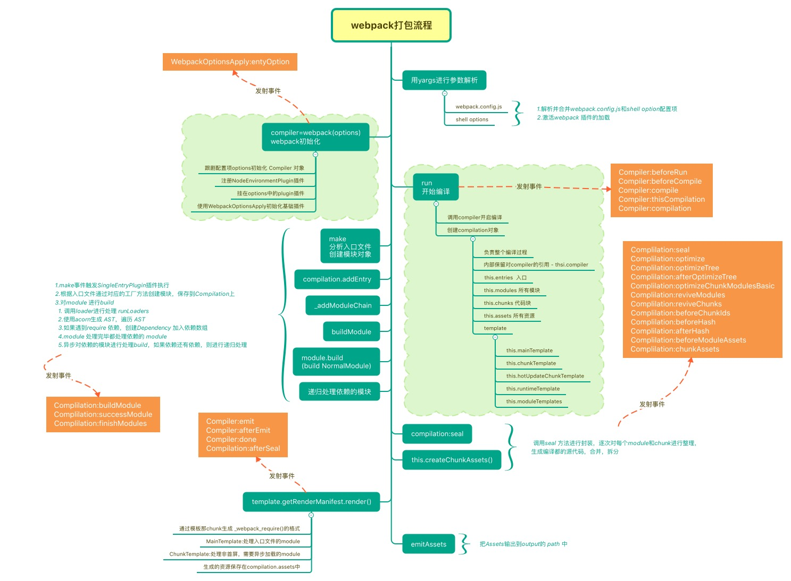

打包流程

entry
string | [string] | object { <key>: string | [string] } | (function: () => string | [string] | object { <key>: string | [string] })
如果传入一个字符串或字符串数组，chunk 会被命名为 main。如果传入一个对象，则每个键(key)会是 chunk 的名称。
output
output.filename
string function
此选项决定了每个输出 bundle 的名称。这些 bundle 将写入到 output.path 选项指定的目录下。
对于单个入口起点，filename 会是一个静态名称。
当通过多个入口起点(entry point)、代码拆分(code splitting)或各种插件(plugin)创建多个 bundle，应该使用以下替换方式来赋予每个 bundle 一个唯一的名称。
- 使用入口名称
1 | filename: "[name].bundle.js" |
- 使用内部 chunk id
1 | filename: "[id].bundle.js" |
- 使用每次构建过程中，唯一的 hash 生成
1 | filename: "[name].[hash].bundle.js" |
- 使用基于每个 chunk 内容的 hash
1 | filename: "[chunkhash].bundle.js" |
[hash] 和 [chunkhash] 的长度可以使用 [hash:16]（默认为20）来指定，或者通过指定output.hashDigestLength 在全局配置长度。
在使用
ExtractTextWebpackPlugin时，可以用[contenthash]来获取提取文件的 hash。
与 output.chunkFilename 的区别：chunkFilename 是未被列在 entry 中，却又需要被打包出来的文件的命名配置。在按需加载（异步）模块的时候，模块的文件是没有被列在 entry 中的。
1 | component: () => import('...') |
output.path
string
对应一个输出打包结果的绝对路径。
output.libraryTarget
string
配置如何暴露 library，此选项与分配给 output.library 的值一同使用。
3.3.1 ~ 3.3.2 为暴露为一个变量。
3.3.3 ~ 3.3.6 为暴露给对象的一个属性。
3.3.7 ~ 3.3.9 为暴露为一个模块。
libraryTarget: “var”
默认值，当 library 加载完成，入口起点的返回值将分配给一个变量。
1 | var MyLibrary = _entry_return_; |
当使用此选项时，将
output.library设置为空，会因为没有变量导致无法赋值。
libraryTarget: “assign”
这将产生一个隐含的全局变量，可能会潜在地重新分配到全局中已存在的值（谨慎使用）。
1 | MyLibrary = _entry_return_; // 如果 MyLibrary 在作用域中未在前面代码进行定义，则你的 library 将被设置在全局作用域内 |
libraryTarget: “this”
入口起点的返回值将分配给 this 的一个属性（由 output.library 定义）下。
1 | this["MyLibrary"] = _entry_return_; |
libraryTarget: “window”
入口起点的返回值将使用 output.library 中定义的值，分配给 window 对象的这个属性下。
libraryTarget: “global”
同 libraryTarget: "window" 。
libraryTarget: “commonjs”
入口起点的返回值将使用 output.library 中定义的值，分配给 exports 对象。
1 | exports["MyLibrary"] = _entry_return_; |
不设置
output.library将导致由入口起点返回的所有属性，都会被赋值给给定的对象，且并不会检查现有的属性名是否存在。（3.3.3 ~ 3.3.6）
libraryTarget: “commonjs2”
入口起点的返回值将分配给 module.exports 对象。
1 | module.exports = _entry_return_; |
output.library会被省略，因此对于此特定的output.libraryTarget，无需再设置output.library。
libraryTarget: “amd”
将 library 暴露为 AMD 模块。
libraryTarget: “umd”
将 library 暴露为所有的模块定义下都可运行的方式。它将在 CommonJS, AMD 环境下运行，或将模块导出到 global 下的变量。（万金油）
省略
output.library会导致将入口起点返回的所有属性，直接赋值给 root 对象。（同3.3.6引用）
可以将 output.library 指定为一个对象，用于给每个 target 起不同的名称。
1 | output: { |
libraryTarget: “jsonp”
将把入口起点的返回值，包裹到一个 jsonp 包装容器中。
1 | MyLibrary(_entry_return_); |
output.libraryExport
string 或 string[]
配置通过 output.libraryTarget 暴露的模块，可以使用于任何的 output.libraryTarget 值。以下用 libraryTarget: "var" 为例。
libraryExport: “default”
将入口起点返回值的默认导出分配给 target。
1 | var MyDefaultModule = _entry_return_.default; |
libraryExport: “MyModule”
将指定的 library 模块分配给 target。
1 | var MyModule = _entry_return_.MyModule; |
libraryExport: [“MyModule”, “MySubModule”]
数组被解析为要分配给 target 的 library 模块的路径。
1 | var MySubModule = _entry_return_.MyModule.MySubModule; |
resolve
resolve.alias
object
创建 import 或 require 的别名，来确保模块引入变得更简单。
可以在给定对象的键后的末尾添加 $，以表示精准匹配。
1 | alias: { |
resolve.extensions
array
自动解析确定的扩展。默认值为：
1 | extensions: [".js", ".json"] |
使用此选项，会覆盖默认数组，这就意味着 webpack 将不再尝试使用默认扩展来解析模块。
resolve.mainFiles
array
解析目录（文件夹）时要使用的文件名。默认：
1 | mainFiles: ["index"] |
resolve.modules
array
告诉 webpack 解析模块时应该搜索的目录，绝对路径和相对路径都能使用。
路径在数组中越靠前，则越优先搜索。
使用相对路径将类似于 Node 查找 ‘node_modules’ 的方式进行查找（通过查看当前目录以及祖先路径）。
使用绝对路径，将只在给定目录中搜索。
module
module.rules
array
匹配条件
{ test: Condition }：匹配特定条件。一般是提供一个正则表达式或正则表达式的数组。{ include: Condition }：匹配特定条件。一般是提供一个字符串或者字符串数组。{ exclude: Condition }：排除特定条件。一般是提供一个字符串或字符串数组。
Rule.loader
Rule.loader 是 Rule.use: [ { loader } ] 的简写。
Rule.use
传递字符串（如：use: [ "style-loader" ]）是 loader 属性的简写方式（如：use: [ { loader: "style-loader "} ]）。
可以有一个 options 属性为字符串或对象，值可以传递到 loader 中，可以理解为 loader 的参数。
1 | use: [ |
一组 loader 的执行顺序默认是从右到左。
Rule.enforce
"pre" | "post"
指定 loader 种类，没有值表示的是普通 loader。
所有 loader 通过 前置, 行内, 普通, 后置 排序，并按此顺序使用。
loader
css-loader
加载并解析导入的 .css 文件。
options.importLoaders
用于配置css-loader 作用于 @import 的资源之前有多少个 loader。
style-loader
将 css-loader 解析得到的内容注入到HTML页面中的 <style> 标签中。
babel-loader
babel 总共分为三个阶段：解析，转换，生成。
babel 本身是不具备转化功能的，提供这些转化功能的是一个个的 plugin。
配置文件
- babel.config.js（全局配置）
1 | module.exports = function (api) { |
- .babelrc（局部配置）
1 | { |
@babel/core
核心包，用于 parse 和 generate ，可以在代码里直接使用。
1 | const babel = require("@babel/core"); |
optionsObject 和 babel.config.js 配置相同。
plugins
插件，告诉 babel 如何转换你的源码。
@babel/plugin-transform-runtime
为了避免多次编译出 helper 函数，需要依赖 @babel/runtime，@babel/runtime 包声明了所有需要用到的帮助函数。
@babel/plugin-transform-runtime 会为代码创建一个沙盒环境，解决了 polyfill 提供的类污染全局作用域的情况。
"foobar".includes("foo")这样的实例方法仍然不能正常执行，因为他在挂载在String.prototype上的，如果需要使用这样的实例方法，还是得使用 polyfill 。
@babel/runtime内部集成了core-js、regenerator、helpers等。
presets
预设，包含了一组 plugin。
@babel/preset-env
只转换语法，例如箭头函数，for...of，** 等等，若想实现 Array、Object 等类上的新方法，以及实现了 Promise、Symbol 这样的新类，需要引入 pollyfill（@babel/pollyfill 已于 babel 7.4 被废弃，若需要使用 pollyfill， 引入 core-js 即可，事实上 @babel/pollyfill 即为 regenerator-runtime 和 core-js 的封装）
当使用
@babel/preset-env转换async/await和generator语法时，可能会报ReferenceError: regeneratorRuntime is not defined错误，因为这需要plugin-transform-regenerator使用regenerator来转换，但是它本身不包括regeneratorRuntime，所以需要引入regenerator-runtime来使regeneratorRuntime存在。通常情况下，使用@babel/plugin-transform-runtime即可。
useBuiltIns
usage：按需引入 pollyfill 。false: 不使用 pollyfill 。
corejs
设置使用的 core-js（pollyfill）的版本，默认为 2。
@babel/preset-react
转换 jsx。
常用配置
1 | // 需要安装依赖 core-js 和 @babel/runtime |
postcss-loader
配置文件
.postcssrc.js 或 postcss.config.js
1 | module.exports = { |
autoprefixer
自动添加浏览器前缀。
postcss-import
通过内联内容来转换 @import 规则。
postcss-cssnext
允许使用未来的 css 特性，并做一些兼容处理。
cssnano
压缩 css，包括压缩颜色，删除注释，丢弃重写的规则，合并内容相同的规则等等。
react-hot-loader
记录 react 页面留存状态 state。
eslint-loader
options.formatter
指定错误报告的格式规范，默认为 stylish，可用第三方插件 eslint-friendly-formatter 。
配置文件
.eslintrc.* 或 .eslintrc
1 | { |